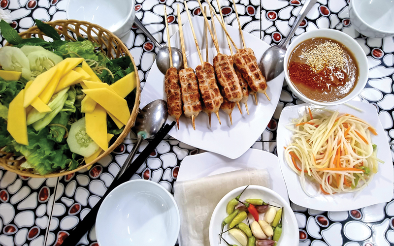

ẨM THỰC QUẢNG TRỊ - ĐẬM ĐÀ HƯƠNG VỊ MIỀN TRUNG
Người Quảng Trị dù có đi đâu, về đâu, mỗi khi nhắc đến ẩm thực quê nhà đều cảm thấy bồi hồi, thương nhớ. Những món ăn bình dị, gắn liền với từng tên làng, tên đất như: bún hến Mai Xá, cháo bột Hải Lăng, bánh ướt Phương Lang, gỏi tép Bàu Trạng, nem chợ Sãi… đã gắn bó mật thiết với cuộc sống của người dân quê để tạo nên nét văn hóa ẩm thực riêng có của đất và người Quảng Trị.
Đậm đà bún hến làng Mai Xá
Là niềm tự hào của ẩm thực quê nhà khi lọt Top 100 món ăn ẩm thực, đặc sản tiêu biểu Việt Nam theo bộ tiêu chí công bố giá trị ẩm thực, đặc sản Việt Nam của Tổ chức Kỷ lục Việt Nam, bún hến làng Mai Xá, thuộc xã Gio Mai, huyện Gio Linh không chỉ chinh phục khẩu vị người dân địa phương mà còn được nhiều du khách phương xa tìm đến thưởng thức. Điểm nhấn tạo nên hồn cốt của món bún hến Mai Xá chính là con chắt chắt, một loại sinh vật thuộc họ hến, có vỏ màu đen sậm, giàu chất đạm, bổ dưỡng được người dân Mai Xá cào lên từ đáy sông Hiếu, sông Thạch Hãn. Nhiều người sau khi thưởng thức món bún hến Mai Xá đều phải công nhận rằng đây không chỉ là món ăn gói trọn được nét ẩm thực bình dị, chân chất được kết tinh trong cuộc sống thường ngày của người dân Quảng Trị, mà còn thể hiện bản sắc văn hóa được người dân địa phương trân trọng, lưu truyền và gìn giữ.
Hương vị khó quên của cháo bột Hải Lăng
Cháo bột Hải Lăng là một trong những món ăn ngon tại Quảng Trị. Một tô cháo bột Hải Lăng màu trắng ngà ở phía trên là lớp thịt cá lóc phi thơm lừng, cùng ít sợi vạt giường độc đáo, có thêm hành ngò, ớt xắt cay xè, trong đó điểm nhấn không thể thiếu là bộ lòng cá lóc đã nấu chín, sau đó cho nước dùng ngập trên bề mặt. Cháo bột Hải Lăng là một trong những món ngon tại Quảng Trị phải ăn khi nóng, vì nóng mới ngon. Vị ngon đằm thắm, lẫn vị cay xè, vị béo ngậy, vị ngọt khi còn bốc khói làm thỏa vị giác thực khách. Món ăn dân dã này đã đi vào tuổi thơ với nhiều người, trở thành kỷ niệm khó quên trong cuộc đời họ. Với riêng khách du lịch, khi đến đây được giới thiệu cháo bột Hải Lăng thì nhất quyết phải nếm thử.
Đặc sản nem lụi chợ Sãi
Bạn có thể đã từng biết tới món nem chua được làm từ thịt heo xay, bì thái chỉ và thính cùng các gia vị quen thuộc. Nhưng nay cũng với những nguyên liệu ấy, người dân xã Triệu Thành, huyện Triệu Phong lại cho ra đời món nem lụi mang những nét riêng có của ẩm thực địa phương để trở thành đặc sản lọt vào Top 100 đặc sản, món ăn, sản vật Việt Nam được Tổ chức Kỷ lục Việt Nam và Tổ chức Top Việt Nam công bố năm 2020. Rất đơn giản trong cách chế biến nhưng món nem lụi nướng đã khiến bao thực khách phải trầm trồ khi thưởng thức. Ăn nem lụi là kiểu ăn “đa vị” nên phải được ăn đúng cách mới cảm nhận được hết cái ngon, cái tinh túy của món ăn. Ở Quảng Trị, nem lụi được ăn kèm với bánh tráng cùng hỗn hợp nhiều loại rau sống như dưa chuột, chuối chát, xoài xanh thái lát mỏng, gỏi đu đủ chua ngọt, rau thơm… Là một trong những món ăn lâu đời của người dân địa phương, nem lụi chợ Sãi luôn có một sức hấp dẫn đặc biệt đối với thực khách và trở thành đặc sản mà rất nhiều du khách muốn khám phá, trải nghiệm khi có dịp đến với mảnh đất Quảng Trị.
Bánh ướt Phương Lang gợi nhớ vị quê
Nhắc đến Phương Lang, người ta không chỉ nhớ về ngôi làng với khung cảnh đẹp yên bình ở xã Hải Ba, huyện Hải Lăng mà còn nhớ về món bánh ướt ngon nức tiếng-bánh ướt Phương Lang. Điều làm nên sự khác biệt cho món bánh nơi đây chính là kỹ thuật tráng bánh. Bánh được tráng cất thủy trên một lớp vải có độ dày vừa phải, đến khi chín là có thể vớt ra xếp chồng lên nhau. Điều quan trọng là thợ tráng bánh phải khéo tay và đầy kinh nghiệm để biết lúc nào là bánh vừa chín tới, không quá dày hay quá mỏng. Bánh ướt Phương Lang dùng nóng hay nguội đều ngon. Món ăn kèm không thể thiếu đó chính là thịt heo ba chỉ, rau sống và loại nước chấm gia truyền được pha từ nước mắm nguyên chất với đậu phộng, ớt, tỏi… Đơn giản nhưng không đơn điệu, món bánh ướt ở làng nghề truyền thống Phương Lang sẽ là đặc sản độc đáo, giúp bạn có thêm nhiều ấn tượng tốt đẹp khi đến với mảnh đất Quảng Trị thân thương.
Bên cạnh các món kể trên, nếu bạn có ghé thăm vùng đất này thì cũng nên thử thêm các món đã làm nên tiếng tăm đặc sản Quảng Trị cho nơi này như: Mít thấu, bánh đúc rau câu và bánh ít lá gai…